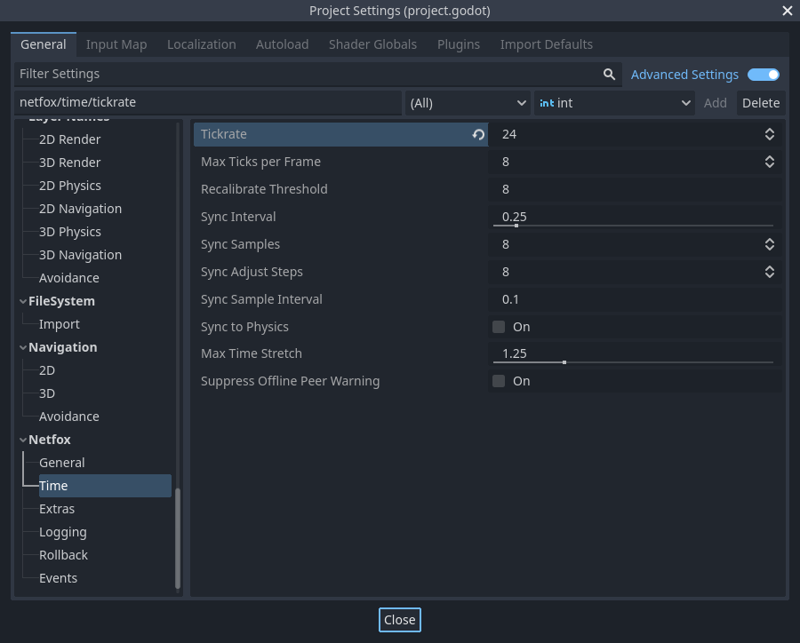

NetworkTime
Tracks shared network time between players, and provides an event loop for synchronized game updates. Provided as an autoload.
A separate timer is provided for network ticks, making the network game update rate independent from rendering or physics frames.
Network tick loop
NetworkTime provides its own independent event loop by exposing signals. This makes networked game logic independent of current FPS, and makes it run at a consistent rate. Connect handlers to NetworkTime's signals to implement networked game logic.
During each frame, NetworkTime checks how much time has elapsed since the last tick loop. When more time has elapsed than a single tick's duration, the network tick loop will run:
The tick loop will run as long as it catches up on ticks to run. Every loop is
limited to run at most max_ticks_per_frame ticks to avoid overwhelming the
CPU.
To tie the network tick loop to Godot's physics process, enable
sync_to_physics. This will result in the tick loop running a single tick in
every physics update.
To move your game logic to the network tick loop, use the on_tick event:
extends Node3D
@export var speed = 4.0
func _ready():
NetworkTime.on_tick.connect(_tick)
func _tick(delta, tick):
# Move forward
position += basis.z * delta * speed
By convention, on_tick handlers are named _tick.
Starting and stopping
By default, NetworkTime does not run the tick loop at all. This lets you control when the network tick loop, and thus the game starts and stops.
To start the tick loop, call the NetworkTime.start() coroutine. On servers,
this will start the tick loop and return immediately. On clients, it will first
synchronize the time to the server, start the network tick loop, and only then
return. Use this when starting the game.
Starting the tick loop before starting multiplayer is not supported.
To stop the tick loop, call NetworkTime.stop(). This will immediately stop
the tick loop and return. Use this when the player leaves a game.
To get notified when a client successfully syncs their time and starts the tick
loop, use the NetworkTime.after_client_sync(peer_id) signal. This is fired
once per client, and only on the server.
Pausing
NetworkTime also supports pausing the game, if needed. There's two cases where pauses are considered.
When running ( and pausing ) the game from the editor, the network tick loop
is automatically paused. As there's currently no API to detect the editor
pausing the game, NetworkTime checks if Godot's _process delta and actual
delta is mismatching, and if so, considers the game paused. In some cases, this
can result in false positives when the game simply hangs for a bit, e.g. when
loading resources.
This pause detection only happens when the game is run from the editor, to avoid false positives in production builds.
The other supported case is pausing the game from the engine itself. Whenever
SceneTree.paused is set to true, NetworkTime won't run the tick loop.
Warning
Pausing the tick loop can cause desynchronization between peers, and could lead to clients fast-forwarding ticks to catch up, or time recalibrations. If the game is paused via SceneTree, make sure it is paused and unpaused at the same time on all peers.
Time synchronization
NetworkTime runs a time synchronization loop on clients, in the background. Synchronizing time makes sure that all players have a shared idea of time and can exchange timing-related data.
The synchronization itself is handled by NetworkTimeSynchronizer.
NetworkTime provides different kinds of time, each for different use cases. Each time can be accessed as ticks or seconds. Both advance after every network tick.
Synchronized time
NetworkTime.timeNetworkTime.ticks
Marks the current network game time. This is continuously synchronized, making sure that these values are as close to eachother on all peers as possible.
Use this whenever a notion of game time is needed.
Local time
Deprecated since netfox v1.9.0. Use synchronized time instead.
NetworkTime.local_timeNetworkTime.local_ticks
Marks the current time in reference to the local machine. Starts at zero when the network tick loop starts.
Useful for logic that is tied to the tick loop, but is not synchronized over the network. A good example is visual effects.
Not suitable for synchronizing data, as the local time is different at each player.
Remote time
Deprecated since netfox v1.9.0. Use synchronized time instead.
NetworkTime.remote_ticksNetwokrTime.remote_timeNetworkTime.remote_rtt
Marks the current estimated time of the server. This is a regularly updated estimate.
Note that on each update, the remote time may jump forwards or even backwards.
The estimate is based on the measured roundtrip time ( remote_rtt ) and the assumption that the latency is exactly half of that.
Can be used as a base for comparisons ( e.g. latency ), but not recommended for tying game logic to it.
To get notified when a time synchronization happens and the remote time is
updated, use the NetworkTime.after_sync signal.
Settings
Settings are found in the Project Settings, under Netfox > Time:

Tickrate specifies the number of ticks every second in the network tick loop.
Max Ticks Per Frame sets the maximum number of frames to simulate per tick loop. Used to avoid freezing the game under load.
Recalibrate Threshold is the largest allowed time discrepancy in seconds. If the difference between the remote clock and reference clock is larger than this setting, the reference clock will be reset to the remote clock. See NetworkTimeSynchronizer for more details.
Sync Interval is the resting time in seconds between sampling the remote clock.
Sync Samples is the number of measurements to use for time synchronization. This includes measuring roundtrip time and estimating clock offsets.
Sync Adjust Steps is the number of iterations to use when adjusting the reference clock. Larger values result in more stable clocks but slower convergence, while smaller values synchronize more aggressively.
Sync Sample Interval deprecated in netfox v1.9.0. Originally used as the resting time between roundtrip measurements.
Sync to Physics ensures that the network tick loop runs in Godot's physics process when enabled. This can be useful in cases where a lot of physics operations need to be done as part of the tick- or the rollback loop.